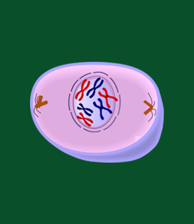

Prophase is a critical and dynamic stage within the cell cycle, particularly during the process of
mitosis. As cells prepare to divide, prophase marks the initial stage where chromatin, a complex of DNA
and proteins, undergoes significant condensation. This condensation transforms the diffuse chromatin
into visible structures known as chromosomes. These chromosomes appear as distinct, thread-like
entities, each consisting of two sister chromatids connected by a centromere. The condensation of
chromatin not only facilitates the efficient distribution of genetic material but also ensures the
accurate segregation of chromosomes into the newly forming daughter cells.
During prophase, another crucial event is the dissolution of the nuclear envelope that surrounds the
cell's nucleus. This breakdown is essential for the proper assembly of the mitotic spindle, a dynamic
structure composed of microtubules that orchestrates the movement and segregation of chromosomes. As the
nuclear envelope disintegrates, microtubules emanate from specialized structures called centrosomes,
migrating toward opposite poles of the cell. These microtubules form the mitotic spindle, laying the
foundation for the subsequent stages of mitosis.
Moreover, prophase is marked by the activation of the mitotic checkpoint, a surveillance mechanism that
ensures the fidelity of chromosome segregation. The checkpoint monitors various cellular factors,
including the attachment of microtubules to chromosomes and the proper alignment of chromosomes at the
cell's equatorial plane. Only when these criteria are met does the cell progress to the next stages of
mitosis. In summary, prophase serves as a pivotal stage in mitosis, involving chromatin condensation,
nuclear envelope breakdown, and the initiation of the mitotic spindle, all crucial for the accurate
division and distribution of genetic material.
